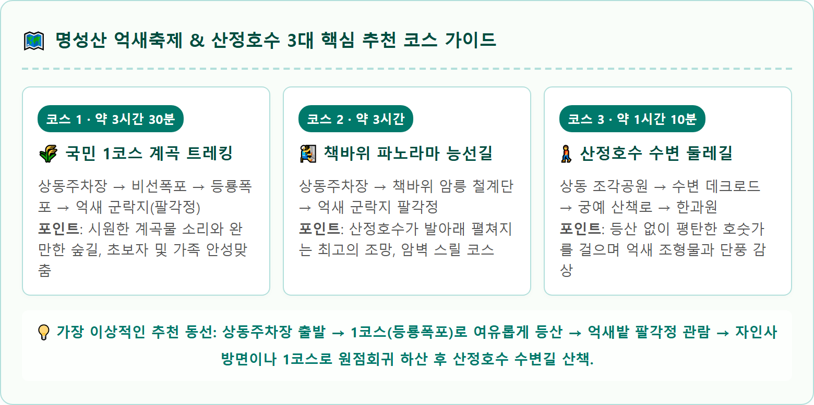
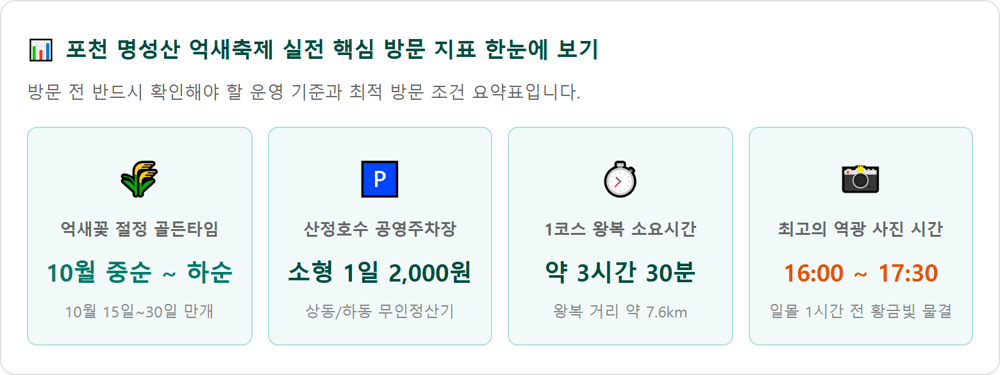

포천 산정호수와 명성산 능선을 따라 은빛으로 물결치는 10월 억새꽃 군락지 절경 / AI 제작 이미지
경기도 포천시 영북면과 강원도 철원군 갈말읍의 경계에 솟아 있는 명성산(鳴聲山, 923m)은 가을이 되면 전국에서 가장 뜨거운 사랑을 받는 억새 산행의 명소입니다.
후삼국 시대 태봉국을 세운 궁예가 왕건에게 패한 뒤 이곳으로 도망쳐 군사들과 함께 서럽게 울었다 하여 '울음산'이라는 이름이 붙여진 명성산은 역사적 애환과 장엄한 대자연의 풍광을 동시에 품고 있습니다.
산 정상부 동남쪽 완만한 능선 분지에는 약 15만 평(약 50만㎡)에 달하는 광활한 억새밭이 펼쳐져 있습니다. 1950년대 한국전쟁 이후 군사 훈련장으로 사용되면서 나무가 사라지고 억새가 자연 군락을 이루기 시작한 곳으로, 가을바람이 산등성이를 스칠 때마다 사각거리는 소리와 함께 은빛, 잿빛, 황금빛 파도가 일렁이는 장관을 선사합니다.
산자락 아래에는 잔잔한 수면을 자랑하는 국민관광지 산정호수가 자리 잡고 있어, 호수 둘레길 산책과 산악 트레킹을 하루에 동시에 즐길 수 있는 최고의 가을 여행지로 손꼽힙니다.
명성산 억새군락지로 오르는 등산로는 크게 3가지 코스로 나뉩니다. 각 코스는 난이도와 소요시간, 주변 풍경이 완전히 다르므로 동행자의 체력 조건에 맞춰 신중하게 선택해야 합니다.
| 등산 코스 | 주요 경로 및 경유지 | 편도 거리 / 소요시간 | 난이도 및 추천 대상 |
|---|---|---|---|
| 제1코스 (등룡폭포길) ★ 가장 대중적 |
산정호수 상동주차장 → 비선폭포 → 등룡폭포 → 억새꽃 군락지 (팔각정) | 편도 3.8km 왕복 약 3시간 ~ 3시간 30분 |
난이도: 보통 (초중급) 완만한 계곡길과 흙길 위주로 초보자, 가족 단위 등산객에게 가장 추천 |
| 제2코스 (책바위 암릉) 스릴 넘치는 조망 |
상동주차장 → 비선폭포 갈림길 → 책바위 암릉 능선 → 팔각정 | 편도 2.5km 왕복 약 3시간 (체력 소모 큼) |
난이도: 상 (중고급자) 가파른 바위 암벽과 철계단 구간. 산정호수 전경이 한눈에 내려다보이나 미끄럼 주의 |
| 제3코스 (자인사 코스) 급경사 돌계단 |
산정호수 자인사 입구 → 급경사 너덜길 돌계단 → 억새꽃 군락지 | 편도 2.2km 왕복 약 2시간 40분 |
난이도: 중상 (하산 비추천) 가장 짧으나 수백 개의 가파른 돌계단으로 무릎에 부담. 하산보다는 등산 코스로 활용 |

처음 명성산을 방문한다면 망설임 없이 제1코스(등룡폭포 코스)를 택해야 안전하고 쾌적하게 억새를 만날 수 있습니다.
상동주차장 상가 단지를 지나 등산로 입구로 들어서면 아담한 비선폭포가 첫인사를 건넵니다. 비선폭포 갈림길에서 우측 가파른 계단은 책바위 코스이므로, 좌측의 넓고 완만한 계곡 자갈길을 따라 직진해야 합니다.
완만한 경사의 숲길을 따라 약 40분 정도 오르면 이 코스의 중간 쉼터인 등룡폭포(登龍瀑布)가 나타납니다. 용이 하늘로 승천했다는 전설이 깃든 2단 폭포로, 시원하게 쏟아지는 물줄기와 암벽을 감싼 붉은 단풍이 어우러져 산행의 피로를 씻어줍니다.
등룡폭포를 지나 돌길을 30분가량 더 오르면 갑자기 숲이 걷히며 탁 트인 은빛 하늘과 함께 나무 데크 산책로가 시작됩니다. 이 순간 마주하는 15만 평 은빛 억새의 웅장한 물결은 가쁜 숨을 단번에 잊게 만듭니다.
명성산 등산로 입구는 산정호수 북동쪽 '상동'에 집중되어 있습니다. 가을 억새축제 기간에는 전국에서 수많은 관광객이 몰려 극심한 교통 정체와 주차난이 발생합니다.
| 주차장 명칭 | 위치 및 주요 접근 시설 | 주차 요금 (1일 정액) | 혼잡도 및 주차 팁 |
|---|---|---|---|
| 산정호수 상동주차장 ★ 등산로 최인접 |
포천시 영북면 산정호수로 411번길 명성산 등산로 입구, 조각공원 인접 |
소형차 2,000원 중형/대형 5,000원 |
가장 먼저 만차 (주말 오전 08:30 이전 도착 필수). 만차 시 진입로 도로변 정체 극심 |
| 산정호수 하동주차장 호수 남측 입구 |
포천시 영북면 산정호수로 222 산정호수 한화리조트 방면 입구 |
소형차 2,000원 중형/대형 5,000원 |
상동보다 비교적 여유 있음. 호수 수변 데크길을 따라 상동 등산로까지 약 25분 도보 이동 필요 |
| 자인사 공터 주차장 | 포천시 영북면 산정호수로 360-12 자인사 사찰 입구 |
무료 (공간 협소) | 주차 공간이 약 30~40대에 불과하여 이른 새벽 방문객만 이용 가능 |

명성산 억새는 10월 초순부터 피기 시작하여 10월 중순(10월 15일 전후)부터 10월 하순(10월 말) 사이에 가장 풍성하고 하얀 솜털을 터뜨리며 절정에 달합니다.
11월 초가 되면 억새 씨앗이 바람에 날아가며 점차 대가 앙상해지므로, 탐스러운 은빛 파도를 사진에 담으려면 10월을 넘기지 않는 것이 좋습니다.
• 팔각정 전망대 및 궁예약수터 앞: 억새밭 능선 전체를 높은 앵글로 굽어볼 수 있는 메인 전망대로, 파란 가을 하늘과 은빛 들판의 대비가 가장 드라마틱합니다.
• 1년 후에 받는 빨간 우체통: 억새 평원 한가운데 우뚝 서 있는 클래식한 빨간 우체통은 명성산의 시그니처 조형물입니다. 현장에서 무료 엽서를 작성해 넣으면 1년 뒤 집으로 배달되는 낭만적인 추억을 남길 수 있습니다.
• 나무 데크 곡선 산책로: 끝없이 펼쳐진 억새풀 사이로 S자 곡선을 그리며 이어지는 목재 데크로드는 인물 사진의 깊이감을 살려주는 최고의 스팟입니다. 오후 4시 이후 햇살이 낮게 기울 때 역광(Backlight)으로 촬영하면 억새 털 하나하나가 황금빛 후광을 발산합니다.
명성산 하산 후 빼놓을 수 없는 코스가 바로 산정호수 둘레길(약 4.0km, 도보 1시간 10분 소요)입니다.
일제강점기인 1925년 영북농지개량조합의 저수지로 축조된 산정호수는 '산속의 우물'이라는 이름 그대로 맑은 호숫물에 웅장한 명성산 망무봉의 암벽 능선이 거울처럼 투영됩니다.
호수를 한 바퀴 도는 둘레길은 수면 위에 설치된 부교(수변 데크) 구간과 울창한 소나무 숲길, 그리고 궁예의 일대기를 벽화와 조형물로 형상화한 '궁예길'로 구성되어 있습니다. 전 구간에 계단이 거의 없어 휠체어와 유모차도 통행할 수 있는 무장애 열린관광지입니다.
명성산 1코스는 난이도가 완만한 편이지만, 편도 3.8km의 산길이며 등룡폭포 이후로는 울퉁불퉁한 너덜 돌길이 지속됩니다.
명성산 가을 억새 산행을 마친 후 즐기는 포천의 향토 미식은 여행의 만족도를 두 배로 높여줍니다.
• 원조 포천 이동갈비: 산정호수에서 차로 약 15분 거리인 이동면 장암리 이동갈비 골목은 40년 전통의 숯불 소갈비 성지입니다. 푸짐한 양의 양념갈비와 깔끔한 생갈비를 참숯 불판에 구워 먹고, 살얼음이 동동 뜬 시원한 동치미 소면으로 마무리하면 산행의 피로가 눈 녹듯 사라집니다.
• 산정호수 도토리묵 & 버섯전골: 상동 상가 단지에는 가을철 향긋한 능이버섯과 송이버섯을 듬뿍 넣은 자연산 버섯전골, 야채를 매콤달콤하게 무쳐낸 야생 도토리묵, 감자전 맛집들이 늘어서 있어 등산 직후 가벼운 식사를 즐기기에 제격입니다.
• 포천 전통 이동막걸리: 백운계곡의 맑은 지하 암반수로 빚어낸 이동막걸리는 톡 쏘는 탄산과 은은한 단맛으로 도토리묵과 환상의 궁합을 자랑합니다. (운전자는 음주 절대 금지!)
가장 알차게 포천 명성산과 산정호수를 즐길 수 있는 당일치기 타임테이블을 제안합니다.